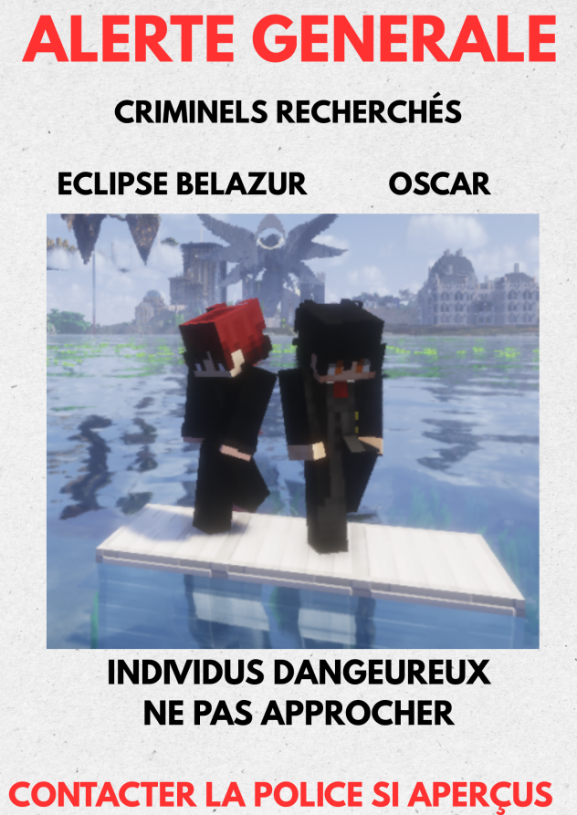

Sluje sauvagement agressé : Lord Eclipse et Oscar ont encore sévi
Deux agresseurs masqués — l'un aux cheveux rose bonbon, l'autre à la chevelure blanche — ont roué de coups Sluje avant de le baigner dans l'acide. Derrière les masques, deux noms que Karminéa ne connaît que trop bien : Lord Eclipse et Oscar.

📷 L'avis de recherche officiel diffusé sur le territoire — « individus dangereux, ne pas approcher »
La violence a de nouveau frappé Karminéa, et cette fois elle porte deux visages masqués. Sluje a été victime d'une agression d'une brutalité rare : roué de coups par deux individus, il a ensuite été plongé dans l'acide par ses bourreaux. Malgré leurs masques, les témoignages convergent : il s'agirait de Lord Eclipse et d'Oscar, deux noms déjà tristement familiers des lecteurs de ce journal.
⚠️ Les faits
Selon les éléments recueillis par la rédaction, Sluje a été pris à partie par deux agresseurs agissant de concert. Les coups ont plu, nombreux et violents, avant que la scène ne bascule dans l'horreur : la victime a été baignée dans l'acide. Un acharnement qui dépasse la simple agression et interroge sur les motivations réelles des deux hommes.
🎭 Des masques qui ne trompent personne
Les deux agresseurs portaient des masques : l'un arborant une chevelure rose bonbon, l'autre une chevelure blanche. Un déguisement qui n'aura pas suffi — la silhouette, le mode opératoire et l'audace des deux individus ont immédiatement orienté les soupçons vers Lord Eclipse — identifié sur l'avis de recherche officiel sous le nom d'Eclipse Belazur — et Oscar.
« Ils n'ont même pas cherché à se cacher vraiment. C'est comme s'ils voulaient qu'on sache que c'était eux. »— Un témoin de la scène, sous couvert d'anonymat
🔁 « Encore sévi » : la récidive de trop ?
Le mot est lâché : encore. Car ce n'est pas la première fois que les noms de Lord Eclipse et d'Oscar s'invitent dans nos colonnes. À chaque fois, le même schéma : une victime isolée, une violence démesurée, et une impunité qui commence à peser lourd sur la confiance des habitants envers la justice de Karminéa.
Dans un contexte où la police est déjà mobilisée sur le front des Hommes en Noir, certains s'inquiètent : les criminels « ordinaires » profitent-ils du chaos ambiant pour agir en toute tranquillité ?
📢 L'appel à témoins
Sluje est actuellement pris en charge et la rédaction lui souhaite un prompt rétablissement. La police appelle toute personne ayant assisté à la scène, ou disposant d'informations sur les déplacements récents de Lord Eclipse et d'Oscar, à se manifester. Le Karmine Déchaîné, fidèle à sa devise, continuera de documenter chaque exaction — masque ou pas masque.